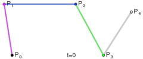
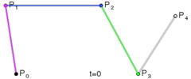

Blog
Actually, it's just some scripts, records and memos.
Cubic Bezier
贝塞尔曲线 Bezier Curve , from Pierre Bézier, 1962.
用平常话来说， n 阶的贝塞尔曲线，即双 n-1 阶贝塞尔曲线之间的插值。
线性曲线：线性贝塞尔曲线函数中的t会经过由P0至P1的B（t）所描述的曲线。例如当t=0.25时，B（t）即一条由点P0至P1路径的四分之一处。就像由0至1的连续t，B（t）描述一条由P0至P1的直线。
二次曲线：为建构二次贝塞尔曲线，可以中介点Q0和Q1作为由0至1的t：1.由P0至P1的连续点Q0，描述一条线性贝塞尔曲线。2.由P1至P2的连续点Q1，描述一条线性贝塞尔曲线。3.由Q0至Q1的连续点B（t），描述一条二次贝塞尔曲线。


 


node-sass 安装失败
使用淘宝镜像：--registry=https://registry.npm.taobao.org
指定sass binary site：SASS_BINARY_SITE=https://npm.taobao.org/mirrors/node-sass/
Windows 下失败了？试试
npm install node-sass --sass-binary-site=；或者修改npm配置文件，参考目录：
C:\Program Files\nodejs\node_modules\npm
PM2 Quick Start
Advanced, production process manager for Node.js Quick start.
$ pm2 start app.js
Bla bla bla